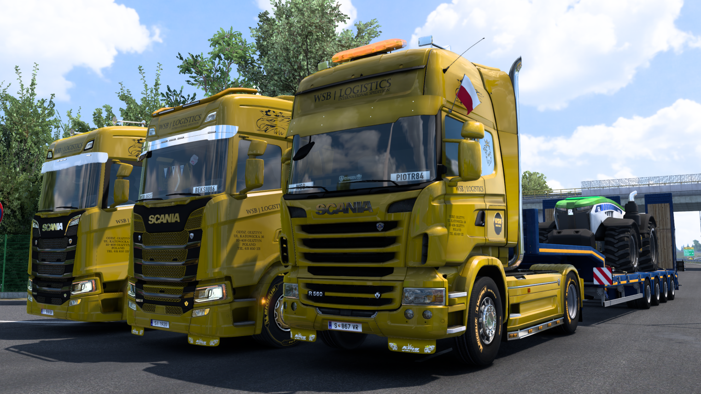
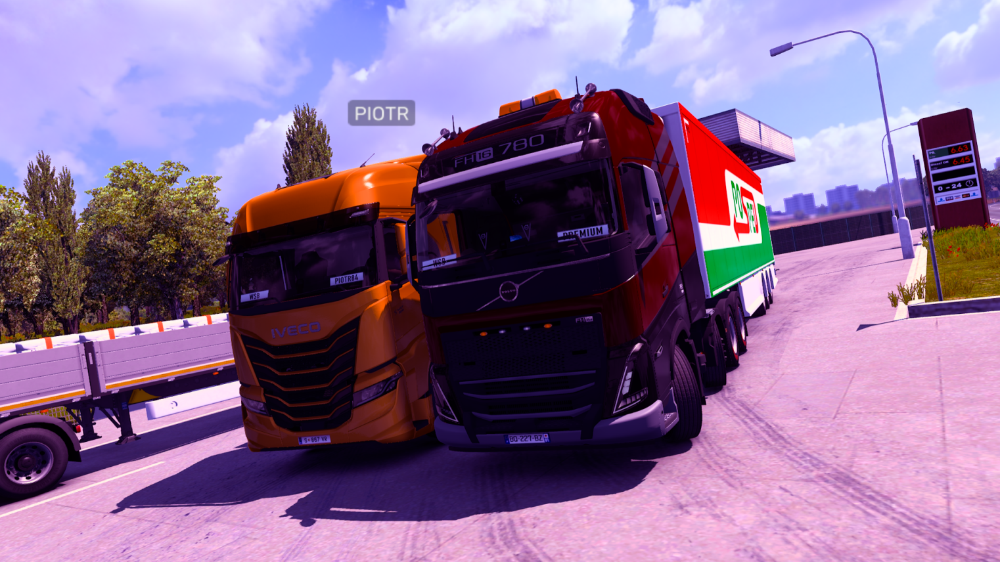
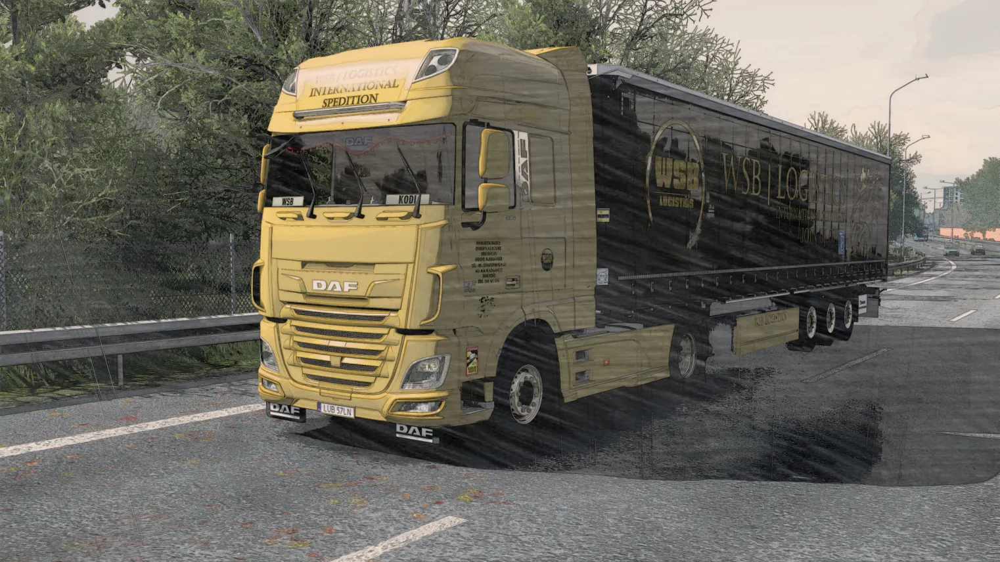
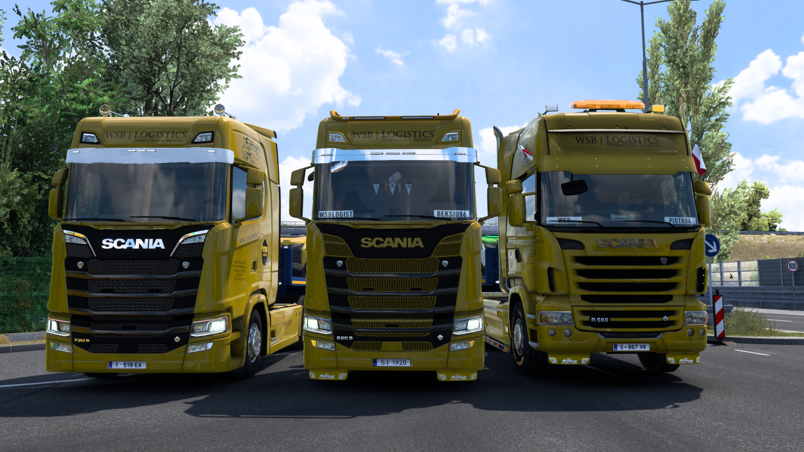
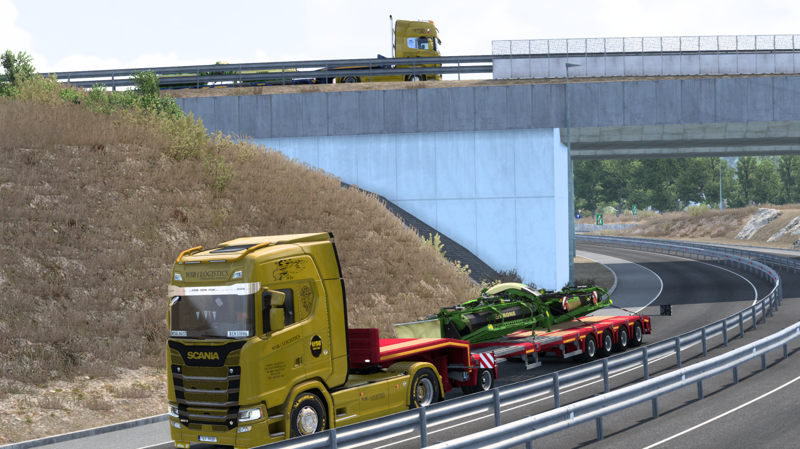
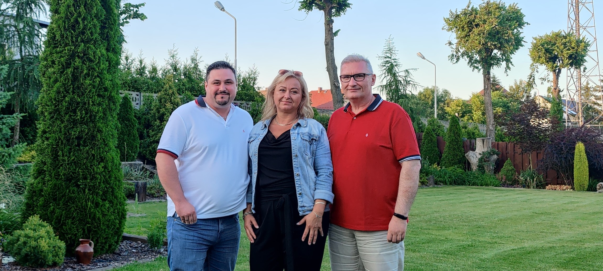

Modyfikacje WSB
Posiadamy własny pakiet modyfikacji:
- Firmowe malowania
- Modele custom na zamówienie
- Inne dodatki ułatwiające jazdę
-
Galeria








Firma z pasji do wielkich pojazdów i realistycznej symulacji jazdy
WSB Logistics to osoby tworzące naszą firmową rodzinę.
Filozofia naszej firmy opiera się na podejściu rodzinnym, które zbudowane jest na wzajemnym zaufaniu, wierze w swoje kompetencje i umiejętności, nieustannym wsparciu oraz dążeniu do ciągłego doskonalenia.
Nasza historia rozpoczęła się 29 stycznia 2021 roku, kiedy dwóch pasjonatów gry Euro Truck Simulator 2 postanowiło połączyć swoje siły.
Dzięki wzajemnej energii i determinacji stworzyliśmy naszą firmę – WSB LOGISTICS.
Jeśli jesteś osobą, która traktuje grę ETS 2 jako miłą odskocznię od codziennych obowiązków i rutyny, to doskonale trafiłeś. Zapraszamy Cię do naszej społeczności, w której możesz liczyć na pozytywną atmosferę, wsparcie oraz wspólne chwile relaksu, spędzając czas na symulacyjnej jeździe i zdobywaniu nowych kilometrów.
Jeśli ETS2 to Twoja odskocznia i szukasz pozytywnej ekipy — jesteś u celu. U nas zawsze znajdziesz wspólną jazdę, pomoc oraz dobrą atmosferę.
Profesjonalizm oraz rzetelność, z jakimi podchodzimy do pracy, pozwoliły nam zdobyć zaufanie firmy ADAR, z którą nawiązaliśmy owocną współpracę.
Aby dołączyć do WSB Logistics, potrzebujesz:
W podaniu podaj:
Posiadamy własny pakiet modyfikacji:






Od prawej: